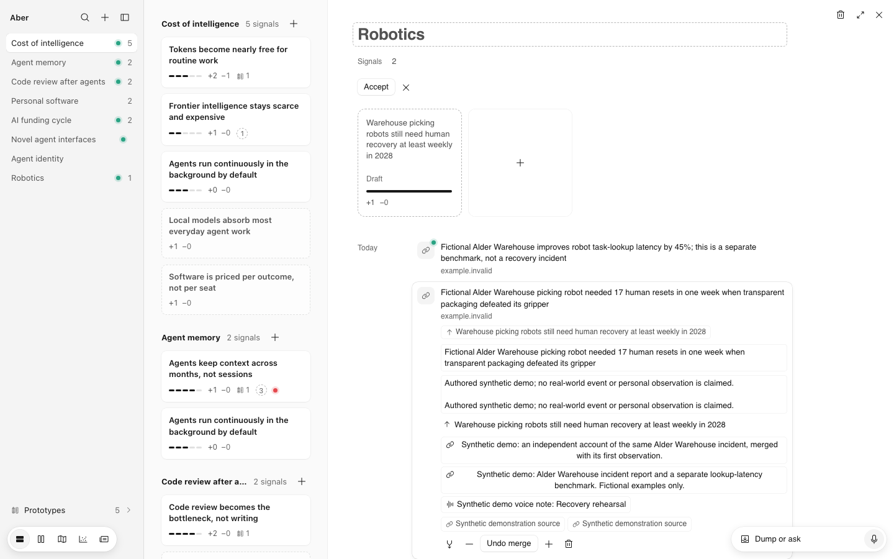
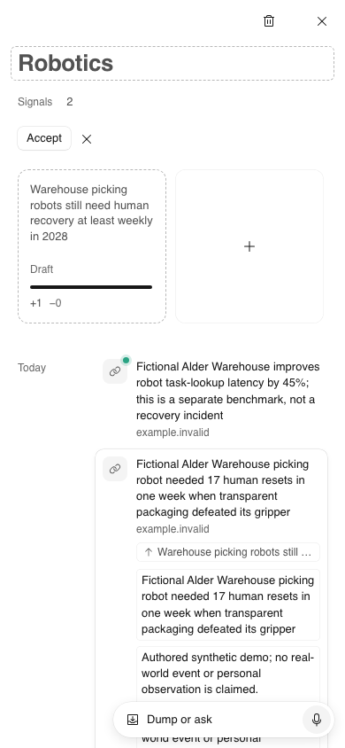
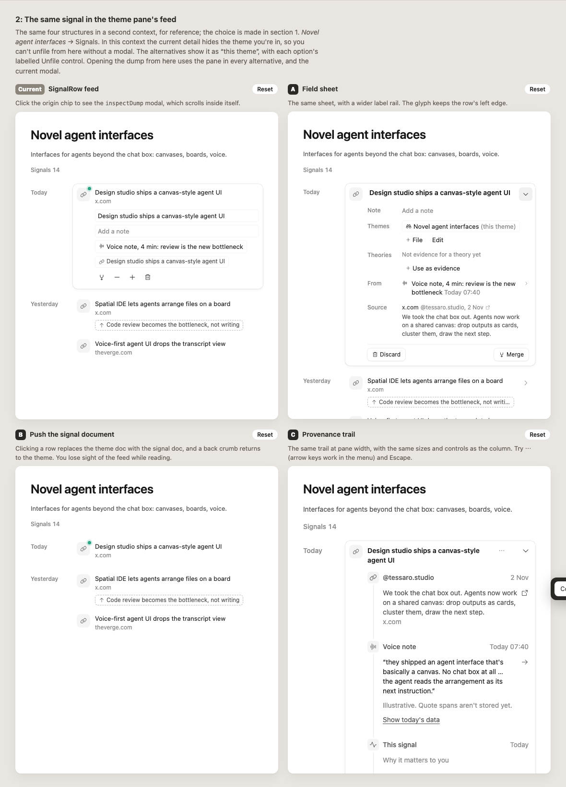
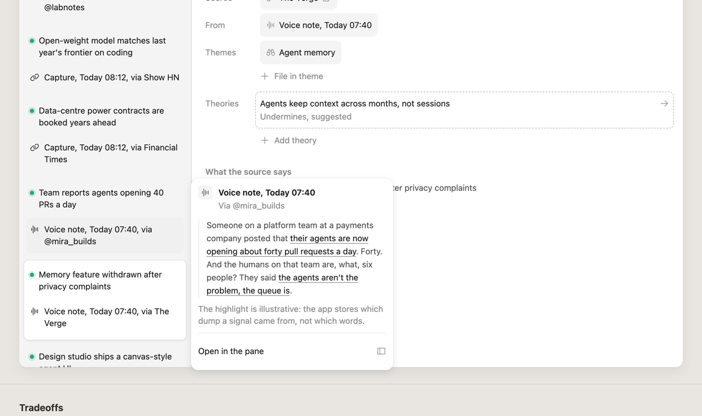
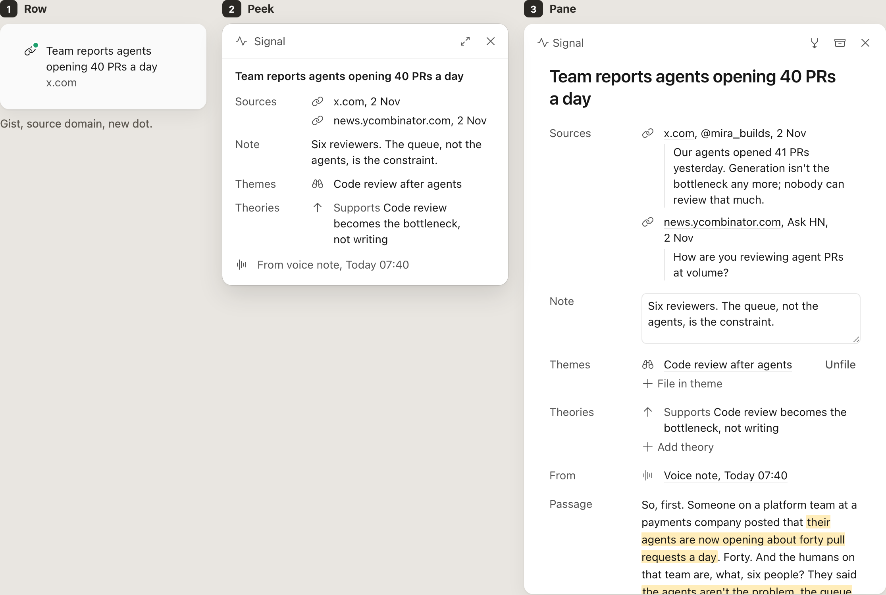
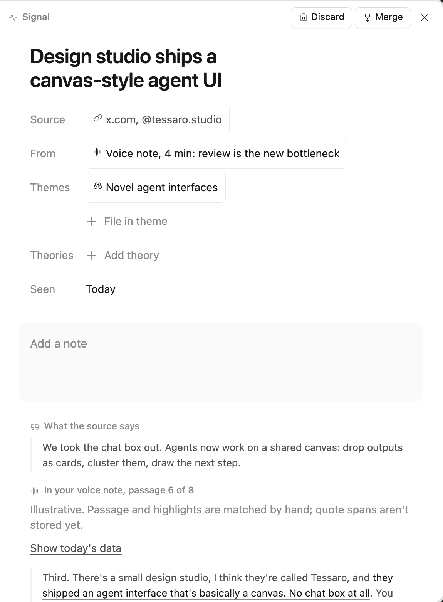
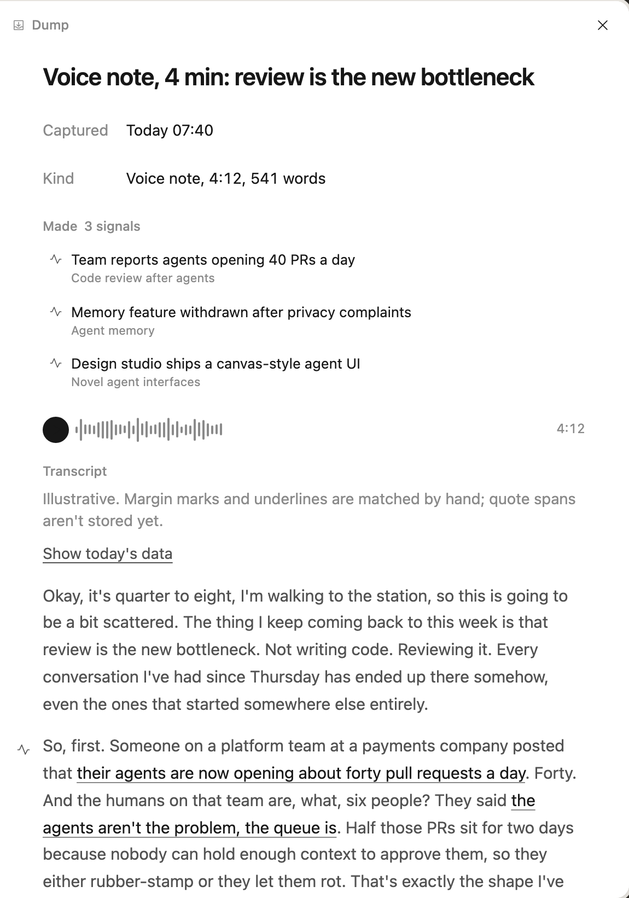

Proposal Maggie hasn't approved this yet. It builds on the coordinator's review of 4 Nov. It keeps the docked Signal and Dump panes she chose in DI-004/005 (B). It replaces every inline unfold with a middle rung: a small floating peek that grows from the row.
Every object has three rungs. The row is what you scan in a list. The peek is a 360px layer tethered to the row: it shows the essentials, pushes nothing and dims nothing, and closes on Esc or an outside click. The pane is the whole object, docked, where editing and every action live. The peek's top-right expand icon, next to its X, opens the pane.
Measured on a fresh demo seed of the real app at 1440 and 390, and on the DI-004 jig. Every one of these traces back to docs/design-model.md. §3 calls signal and dump detail tier 0, "unfolds from its row". §4 says a signal row "unfolds in place", a filed token "unfolds the gists" and a tripped count "toggles the matched signals". §5 sets a type scale of 11/12/13/20, with ink-3 for tertiary text.




Revised after Maggie's review These are fixed in every option below. The header carries the same kind icon as the row (link, voice note or typed note) and the signal's title. It doesn't spell out "Signal", because the list it opened from already says so. The note is the signal's own prose, so it sits right under the title on the same left edge. Sources, themes, theories and where it came from are connected objects, kept apart from that core. The pane uses the same order, so row, peek and pane read as one object at three sizes.
What changes between the options is how the connected objects are set apart. Each shows the same signal as row, peek and pane, then three harder cases. Until you choose, the rest of the page uses A.

No labels. Each connection carries its own icon (link, binoculars, arrow up or down), and the groups are separated by space. Quietest of the three; it relies on the icons being learnable.
Long title and note, voice Authored
No note, one source, a suggested link
Typed observation, no source, two theories
Sources, Themes and Theories are named above their items, on the title's left edge. Easiest to scan cold, and keeps the labels you already know from the pane. The most text of the three.
Long title and note, voice Authored
No note, one source, a suggested link
Typed observation, no source, two theories
Sources and themes become tokens; theory claims are too long for tokens, so they stay lines. The core reads like a card and the tray like its footer. Densest for short names, and the pane can unfile a theme from its token.
Long title and note, voice Authored
No note, one source, a suggested link
Typed observation, no source, two theories
Team reports agents opening 40 PRs a day, from this morning's voice note, shown in the composition you've chosen above (now A). Each rung keeps what the last one showed and adds a little. The pane adds editing, the source's words, the passage it came from, its merge history and every action.
Gist, source domain, new dot.
Voice note, 4 min: review is the new bottleneck. The peek answers "what did this become?" without the 541-word transcript. A failed dump keeps its failure in the peek, because you need to know about it before you open anything.
Kind icon, time, first line, "made 3".
When processing fails, the failure stays in the peek, so you see it before opening anything. There's no transcript to preview, so nothing is made yet. Retry lives in the pane, next to the processing run.
The same ladder for the other nouns. A suggestion is never a destination in its own right: it shows inside the peek of the object it changes, with Dismiss to the left of Accept.
Peek: what it holds, up to 3 theories with confidence, and the 3 newest signals. Only in the pane: the full feed, the theory deck, prototypes, editing the name and Retire.
Peek: claim, confidence, Happens by, tripwire, the top 2 supporting and top 2 undermining signals, and how many suggestions are waiting. A tripped count stays red here. Only in the pane: body, history, rivals, what it follows from, versions and every action.
Peek: status, the theories it tests, the first screenshot (schematic here) and links. Only in the pane: body, all media and editing.
Novel agent interfaces in the docked pane. The second signal has a suggested link to a theory, so its peek carries the only actions a peek allows: Dismiss and Accept. Try both stages: open a peek, follow the theme or theory inside it (the peek is replaced, never stacked), then expand.
The coordinator's proposal. One click always shows a little more. Two clicks reach the pane.
Closer to Maggie's first description: "an expansion icon or similar that opens an expanded popover first". The eye shows on hover or focus, and always on touch.
The same peek both ways. Nothing in a peek edits the object, so it can close on any outside click without losing work.
Every other change happens in the pane, one click away.
Filing is the most common triage step for a fresh signal. The picker would replace the peek, anchored to the same row.
Each stage is live: click a row, card, token or count. Only one peek is open across the whole page.
All five types at their real column width. A 360px peek is wider than a column, so it floats over the next column instead of pushing anything down.
The challenged theory, new signals and the dump each open their own peek.
Replaces §4's "unfolds the gists". The token peeks the set it filed; each gist opens its own peek in place.
Replaces §4's "count toggles the matched signals". The red count opens the matches, each with Dismiss and Accept. Deciding the last one turns the count off.
Replaces the DI-002 dump viewer and the DI-004 §7 popover. "Voice note, Today 07:40" under From in the Signal pane opens the dump's peek, kept inside the stage. Its expand icon swaps the pane to the dump, with Back.
The coordinator's review says bottom sheet. The earlier DI-004 provenance note said a tethered card, "not a bottom sheet". Neither dims the page. Tap the second signal in each phone.
Always in thumb reach and the same place every time. It covers the bottom of the list, but not the row you tapped.
Grows from the row, as on desktop, and flips above it when the row is low on the screen.
Computed styles inside .pn-doc in the DI-004 jig (before), against the panes in this jig (after). Script: measure.mjs, Playwright at 1440. Contrast is measured against the pane's white.


| Property | Rule | Before (DI-004 B panes) | After (this jig) |
|---|---|---|---|
| Text sizes | 14 body and labels, 22 title, 12 counts only | 11, 12, 13, 14, 15, 22, 26 | 12, 14, 22 |
| Field label colour | ink-2, at least 4.5:1 | #8a8a8a, 3.45:1 | ink-2 #525252, 7.81:1 |
| Lowest contrast of any text | at least 4.5:1 | 3.45:1 (labels, headings, 11px theme names) | 5.65:1 (the red failure text); body 17.93:1 |
| Title sizes | one, 22–24 | 26 (signal), 22 (dump) | 22 in both panes; peeks use 14 w600 |
| Icon sizes | 16 in a 24px slot | 10, 12, 13 and 16 | 16 only (12 in the Signal pane, 8 in the Dump pane) |
| Icon centre vs first line | within ±0.5px | −1.5 to +4px (12px chips high, 13px margin marks low) | +0.5px on every icon |
| Grey section headings and notes | none; one set of field labels | "What the source says", "Made", "Transcript", "Illustrative." | None. Signal pane: no label table (round 2); B names only Sources, Themes, Theories. Dump pane: Captured, Kind, Made, Processed, Audio, Transcript |
| Title and note share a left edge (round 2) | note directly under the title, on its text edge | Note was a table row between Sources and Themes | Peek: title 44px, note 44px, 4px apart. Pane: title, note text and every line's text at 60px. Same in A, B and C (C's tray insets its lines to 72px) |
| Kind glyph (round 2) | one meaning in row, peek and pane | Row: link icon. Peek: a pulse and the word "Signal". Pane bar: the same | Link, voice or typed-note glyph in the row, the peek header and the pane title; no written type. Glyph centre vs title's first line: 0px in the peek and pane |
| Reading measure | at most 68ch | 68ch (kept) | 68ch |
| Rule | Proposed behaviour |
|---|---|
| Tier | Tier 4, a tethered float. It sits above the surface with a float shadow. No scrim, no blocking, never centred. |
| Origin | It grows from the row or token that opened it (scale 0.96 → 1, 180ms, ease-out); with reduced motion it only fades. The row keeps a ring while its peek is open. |
| Placement | Below the trigger, aligned to its left edge, 6px gap. It flips above when there's more room there, and is clamped 8px inside the scroller it opened from. The body scrolls inside the peek only if the space left is shorter than the content. |
| Width | 360px. At 390 it becomes either a sheet or a full-width card (open choice above). |
| One at a time | Opening a peek closes any other. Clicking a link inside a peek replaces it in place, with Back in its header. A peek never opens on top of a peek. |
| Close | Esc or X closes it and returns focus to the trigger. An outside click closes it and leaves focus where you clicked. Clicking the same trigger again toggles it shut. It also closes if its row scrolls out of view. |
| Keyboard | Enter or Space on a row opens its peek, and focus moves into the peek. Tab moves through the peek's links; Esc goes back. The trigger has aria-haspopup="dialog" and aria-expanded; the peek is role="dialog", non-modal. |
| To the pane | The expand icon (top right, beside X) opens the object in the docked pane and closes the peek. Focus moves to the pane's title. |
| Pickers and menus | File in theme, Add theory and Retire stay anchored popovers or menus from the pane. If a quick verb is chosen for peeks, its picker replaces the peek; it doesn't stack. |
| Not peeks | Creation (an empty object in the pane), Merge (immediate, with Undo), Delete dump (a modal), Find (a palette) and toasts. These are actions, not reading. |
| Editing contexts | Inside the pane, a field's own control edits it; a reference's text opens its peek. In pickers and the palette a row selects; it doesn't peek. |
| Earlier | Status | Why |
|---|---|---|
| DI-004 A (field sheet in place) and C (provenance trail in place) | Superseded | Both unfold the object inside its list. C's order of fields (source, then Maggie's words, then the signal) carries into the pane. |
| DI-004 B, docked Signal and Dump panes | Kept | Becomes rung 3. Its contents are redrawn to the measured rules above. |
| DI-004 §2 options in the feed | Superseded | Replaced by the feed stages above. |
| DI-004 §7 popover with the pane, and the provenance popover note ("not a bottom sheet") | Superseded | It becomes the dump peek from "From". Whether it's a sheet at 390 is now an open choice. |
| DI-002 dump viewer, "unfold in place" alternative | Superseded | The dump peek replaces both the modal and the unfold. |
| DI-002 decisions on creation, pickers, Retire, Merge, Delete and Find | Kept | Untouched; listed under "Not peeks" in the contract. |
| DI-001 object references and DI-006 marks | Kept | Rows use the type glyph and marks those jigs settled; this jig only adds what a click reveals. |
| Design model §3, §4 and §5 | Edit proposed | See model-diff.md. |